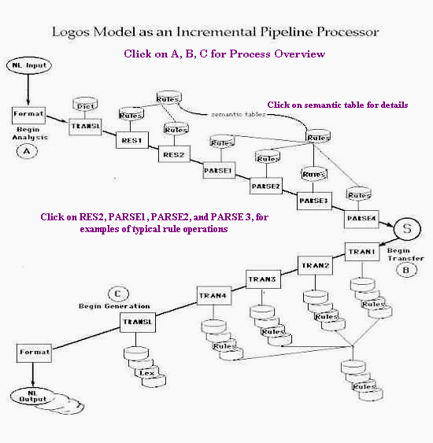
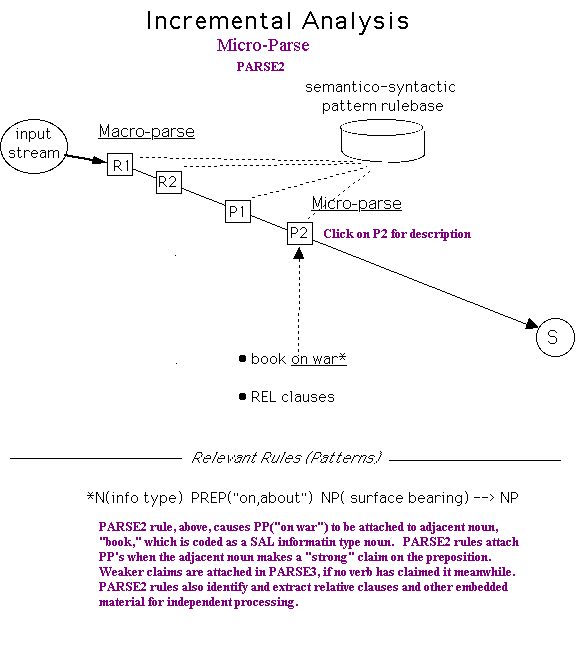
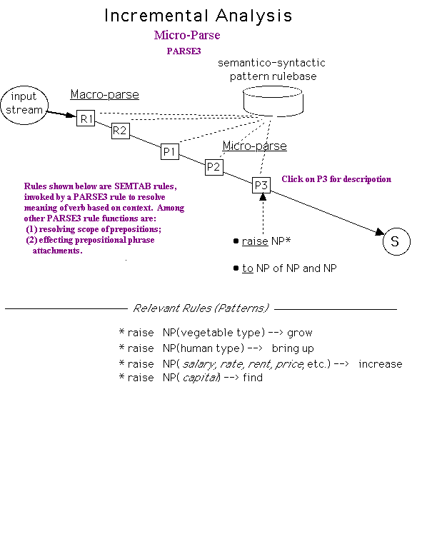

Introducing the Logos Model¶
An Overview of the Logos Model Design and Design Motivations
Design Goals¶
The Logos Model for digital translation has been built to satisfy the following design requirements.
PRODUCTIVITY REQUIREMENTS¶
industrial strength: cost-effective in production environments
good quality translation: good quality translation of well-written text, provided requisite terminology has been added to the system.
unconstrained input: no restrictions on language or text type.
integrated with Translation Memory (TM): shallow integration with IBM and Trados TM products. Model must allow for deeper integration in the future (e.g. shared dictionary, etc.).
user-friendly tools:
lexical updating via the TermBulder lexical expert system.
semantic rules entered via RuleBuilder tool.
global editing (source and target) via Pattern Matcher.
format preservation: target output preserves format of input document for SMGL, HTML, FrameMaker, Interleaf, etc.
LINGUISTIC REQUIREMENTS¶
universal translator: Logos Model applicable to any language combination.
multi-target architecture: single source-analysis serves multiple-target generation.
robustness: processes grammatical and ungrammatical input.
complexity: handles long, complex sentences.
unrestricted sentence length: sentences of greater than 70 words are automatically segmented.
semantico-syntactic representation language:
interlingual-style taxonomy comprising c. 1000 elements.
places semantics and syntax on a continuum
semantic handling:
resolve semantic ambiguity for verbs based on verb’s argument structure.
resolves meaning of prepositions based on context.
pattern-based grammar: rules consist of declarative, semantico-syntactic patterns.
deterministic parsing: availability of semantics at every decision point allows for single (deterministic) parse results.
contrastive linguistics: translations are effected by equivalencing semantico-syntactic target patterns to each node of the source parse tree.
subject-matter sensitivity in lexical lookup: user-defined subject matter codes, or default, Logos-provided subject matter codes, are used to guide lexical lookup.
improvablility:
no known upper limit on improvablility
no limit on rulebase size.
no significant performance impact with rulebase growth.
SYSTEM REQUIREMENTS¶
language-independent software: same physical software module for all language pairs.
symbolic neural net implementation: integrates symbolic data with neural net architecture to achieve 100% declarativeness.
modularized software: supports parallel processing
performance: impact of sentence length on compute time is strictly linear.
all linguistic knowledge in form of data: language-neutral software interprets data.
relational data base: all linguistic knowledge stored in relational database.
open system architecture: integratable software. ODBC layer between software and RDBMS.
client-server configuration: Java Client for any platform. Server on Sun Workstations and high-end PC platforms.
system portability: software is in Java, C++ and C, running under SUN O.S., Windows NT.
Principal Design Issues¶
The design of the Logos Model was motivated by answers to four basic questions. These are:
1. How should language and linguistic knowledge be represented?¶
There are five kinds of knowledge that can contribute to digital translation: (1) morphological, (2) syntactic, (3) semantic, (4) pragmatic (real world), and (5) inferential knowledge.
Early systems failed when they could not solve how to represent (3). Recent knowledge-based systems, purportedly relying heavily on (4), have not proven effective except, perhaps, in very narrow bandwidths. No one has been able to build a system where (5) is a critical component of the translation process.
Effective, general purpose digital translation must depend therefore upon (1), (2) and (3), i.e. upon the ability to represent morpho-syntactico-semantic information found to be explicitly present in text itself. Fortunately the redundancy and variety of clues in natural language makes this a realistic, even if difficult, task for discursive texts.
The area of difficulty, historically, has lain with representing semantic knowledge. Semantic knowledge may be represented in one of two ways: (a) by a set of semantic primitives or markers assigned to lexical entries, thus providing the system with handles as to the entry’s meaning; (b) by an actual semantic or semantico-syntactic language to which natural language maps. Such a language is sometimes referred to as a metalanguage. Other names for it are interlingua and pivot language.
With few exceptions, commercial models have relied upon (a), i.e. semantic primitives or markers. Some high-end systems have a rich set of markers, low-end systems are more sparse.
One known weakness of method (a) that potentially affects all systems having rich semantics at the lexical level is that such systems may not make much actual use of semantics in subsequent analysis.
The Logos Model uses approach (b) in representing language at the level of meaning.
Logos Model
In the Logos Model, language is represented by a kind of metalanguage, in effect an ontology that represents what is (things, ideas, relationships, dispositions, conditions, processes, etc) as well as, of course, the elements of grammar such as articles, prepositions, conjunctions, etc. In terms of natural language processing, the metalanguage represents both syntax and semantics.
The metalanguage is called SAL, for Semantico-Syntactic Abstraction Language.
SAL is an actual language, not a set of linguistic markers or primitives. This implies that natural language can be readily mapped to SAL.
The granularity of the representational ontology is sufficient for translation purposes only–i.e., the ontology need not be especially fine-grained. (Sometimes, to be sure, the granularity of a metalanguage can be too coarse, in which case use of literal words may be necessary, or a supplemental finer-grained taxonomy.)
The SAL meta-language is semantico-syntactic in nature, representing natural language at a second-order abstractions (common nouns are first-order abstractions). Syntax and semantics are seen as a continuum.
Everything internal to the Logos Model, from input stream to the knowledge store, is expressed in SAL. This representational monotonicity is felt to be fundamental to the Model’s design.
Pragmatic (real-world knowledge) does not play a role in the Logos Model
2. How is that knowledge to be stored?¶
Traditional models store linguistic knowledge in two principal places: (a) the lexicon, wherein all the details, e.g. semantic data, needed for source analysis and target generation are to be found, and (b) the rulebase, wherein all the generalities, e.g. syntactic data, needed for source analysis or target generation are to be found.
This arrangement, however, is seen to have certain drawbacks. Among them:
presupposes representational separation of syntax and semantics
syntax and semantics handling become separate processes
lexicons do not easily treat the general syntactic case
rulebases do not easily treat the particular semantic case
neither provides semantico-syntactic perspective
has weak powers of disambiguation; precludes deterministic parse
rich lexicons are hard for users to build and maintain
Logos Model
The Logos Model also stores its knowledge base in lexicon and rulebase, but, exceptionally, the informational content of the lexicon is quite lean, whereas the informational content of the rulebase is quite rich.
The intended advantage of the Logos Model arrangement is that (1) the lexicon, being simple, is fairly easy for commercial users to build and maintain; and (2) the semantico-syntactic rulebase, as it encompasses both semantic detail and syntactic generality, affords effective means for analysis of complex source language phenomena.
This fusion of detail and generality in the rulebase is made possible by (a) the semantico-syntactic nature of the SAL Representation Language, which sees syntax and semantics as a continuum; and (b) the abstract nature of that representation, which reduces semantic detail to a manageable level.
This fusion of semantic detail and syntactic generality in the Logos Model’s rulebase is thought to be a fundamental departure from the traditional model.
3. How is that knowledge to be applied?¶
One of the most difficult questions in the design of a digital translation system concerns how the rulebase is to be applied to the input stream. (David Hays, early pioneer in this field, suggested it is possibly the most fundamental question).
The reason for the difficulty is simple enough: the rules (linguistic knowledge) are in one language, the input stream (natural language itself) is in another. It is a matter of comparing apples and oranges: rules written in Lisp or Prolog or some other specialized language on the one hand, and the natural language input stream on the other, in whatever way it is represented.
Traditional systems employ one of two methods for applying the linguistic knowledge (rulebase) to the language (input stream): (a) program logic, or (b) a set of metarules–rules whose function is to apply other rules (a third alternative of applying all the rules all the time is not realistic). In either case, a match is being sought between entities that are representationally different. This discontinuity gives rise to inevitable inefficiencies in the matching process.
This discontinuity between the linguistic knowledge store and the language stream being analyzed by means of that knowledge store explains why rulebases must be kept small in size. Without an effective matching principle, there is no way to tell in advance, for a given segment of the input stream, whether a given rule in the rulebase should be looked at or not. Thus many rules are invoked that ought not to have been invoked, or conversely, some rules may not be invoked that ought to have been.
This inefficiency in applying the rulebase to the input stream gets compounded (in a way critical to performance) if the number of such rules become too large. There are, to be sure, artful ways to minimize this inefficiency (e.g., with discrimination networks, etc.), but even so, matching inefficiencies remain an issue and the pressure to keep rulebases small is an inherent feature of the traditional model.
The Logos Model
The Logos Model addresses the representational discontinuity of stored linguistic knowledge and the natural language input stream by representing both with the same SAL language. Further, the rulebase consists of SAL patterns that are easily matched to the SAL input stream, which is itself one long SAL pattern. During sentence analysis, this pattern matching process takes place at progressively higher levels of abstraction, but it is always a case of comparing apples with apples.
The Logos Model’s rulebase is best seen as an indexable dictionary of SAL (semantico-syntactic) patterns. The benefits of an indexable rulebase qua pattern dictionary are pronounced.
Matching efficiencies: Because of the internal representational monotonicity afforded by SAL, the SAL input stream serves as search argument to the Model’s SAL rulebase (just as natural language words serve as search arguments to the natural language lexicon). As in lexical look-up, this means that rules which need not be looked at will not be, and rules which need to be looked at indeed will be.
No limit on rulebase size: Like a dictionary, the rulebase qua dictionary can grow arbitrarily large without undue performance cost. This means that there is no practical upper limit as to the amount of linguistic phenomena addressable by the rulebase. Thus, the proliferation of rules (as the rulebase is oriented to more and more linguistic detail) causes no problem.
Rulebase is self-organizing: Like normal dictionaries, the pattern dictionaries of the Logos Model are sortable, which means that the order and sequence of the pattern-rules in the Logos rulebase is regulated by a sort principle. This has important implications for rulebase maintenance and complexity issues generally.
The Logos Model’s knowledge base (lexicon and rulebase) is applied to the input stream as follows.
NL words in the input stream are looked up in the lexicon
The lexicon re-expresses NL entities as symbolic SAL entities
The NL string is now represented as an SAL string
The SAL input string serves as search argument to SAL rulebase
SAL Patterns in the input stream match SAL patterns in the rulebase
Such matches effect parsing decisions (as will become clear)
Analyzed source SAL patterns are linked to target equivalents
4. How are complexity problems to be dealt with?¶
Complexity issues can be considered satisfactorily addressed if a system affords the following features:
~ rulebases can grow arbitrarily large without significant performance impact ~ no matter how large the rulebase grows, matching efficiencies can be maintained (rules needing to be looked at will be, with the converse also being true) ~ such a rulebase has an internal ordering principle and therefore is relatively easy to maintain.
The above is a fair characterization of the Logos Model. Accordingly, while complexity is always an issue in natural language processing, it is felt that this issue is containable in such a model.
Let it be said, in this connection, that the designer of the Logos Model was convinced from the outset that failure to address adequately this complexity issue would spell doom for the Model down the road, as developers attempted to scale up the model to cope with real world documents. He believes that failure to address this complexity issue accounted for the inability of many otherwise promising models to ever become production worthy.
Model Components¶
Linguistic Components¶
1. Morphology. This database is in the form of tables. Identical morphological tables (called PAT tables) subserve both source language analysis and target language generation.
2. Lexicon. Lexical data is stored in a relational database. Entries in the lexicon subserve both source analysis and target generation.
The lexicon is physically one, with logical subdivisions for languages, subject matter domains within language, and user ID’s. Entries may contain up to ten words. Lexicon is searched by longest match principle.
Associated with each entry are semantico-syntactic (SAL) codes, a hash code for both the head morpheme and the full entry, a limited number of feature codes, and codes denoting morphological class. Address links point to transfers, where similar type of information is stored for the target. Associated with each morphological class is logic for morphological decoding during source analysis, and for stem generation and inflection during target generation.)
The user tool, TermBuilder, allows users to enter new terminology and or maintain an existing terminology base. TermBuilder is an expert system that semi-automates the lexical building function. Users can convert their glossaries to a Logos Lexicon virtually automatically, although it is recommended that automatically generated SAL codes be vetted by a user tutored in SAL.
3. Grammar Rulebase. There are three types of grammar rulebases in the Logos Model: (1) parsing rules, one set called RES rules (RES1 and RES2), which effects the macro-parse, and the other called PARSE rules (PARSE1, PARSE2, PARSE3, PARSE4), which effect the micro-parse; (2) transfer rules, called TRAN rules (TRAN1, TRAN2, TRAN3, and TRAN4); and (3) target generation rules.
The RES and TRAN parsing rules in (1) are distributed over six independent rulebase modules (two for RES, four for PARSE. These software modules have the same name as the associated rulebase, viz., RES1 and RES2, PARSE1, PARSE2, etc.); TRAN rules are distributed over four TRAN rulebase modules. These software modules also take the name of their corresponding rulebases, viz., TRAN1, TRAN2, TRAN3, and TRAN4.
RES and PARSE processes are purely source-language oriented. The source analysis effected by RES and PARSE processes supports any number of language pairs sharing a common source.
TRAN rules effect transfer and presuppose the parsing decisions of RES and PARSE. This means, in effect, that there are no significant source-language ambiguities remaining for TRAN to resolve. TRAN rules, however, do allow the target linguist to examine the source in terms of special needs of that particular target. Each target language, therefore, has its own set of TRAN rules (although closely related target languages may optionally share a common set of TRAN rules.)
Target generation rules (3) are keyed to transfer (TRAN) rules. Individual target generation rules create target language equivalents for the SAL interlingual pattern of the TRAN rule that they are associated with. The target rules are stored in target rulebases called 30-, 40-, and 50-Tables.
Grammar rules in the Logos Model are quite unlike rules of formal grammars. Logos Model rules take the form of semantico-syntactic patterns expressed in the SAL representation language. Rules are exceptionally shallow in function and generally presuppose the operation of other rules. Many thousands of such mutually interdependent rules are distributed over the entire set of rulebase modules.
4. Semantic Table (SEMTAB). The grammar rulebase of the Logos Model is supplemented by a rulebase base known as SEMTAB or the Semantic Table.
SEMTAB rules are pattern-based rules not unlike those found in the RES, PARSE, and TRAN grammar rulebases. Although the grammar rules in PARSE and TRAN can in principle handle semantics at the same level of detail as SEMTAB, it has proven to be more efficient to treat the more general case in PARSE or TRAN, and the semantically more specific case in SEMTAB. SEMTAB efficiency also stems from the fact that these rules are deep structure rules. This means that a single SEMTAB rule can be applied to a variety of surface structures. In the example below, the single deep structure SEMTAB rule in (1) effects the same transformation in the variety of surface constructions shown in (2). Part-of-speech transformations to satisfy the requirements of the surface structure are effected automatically.
temper N(liquid type) –> dilute
wine-tempering practices –> wine-diluting practices wine tempered with water –> wine diluted with water tempering wine –> diluting wine
SEMTAB rules are invoked to assist in decision making in both analysis and transfer stages of translation.
During analysis of a sentence, RES and PARSE rules that match on a SAL input string can effect further processing of that string by passing the string laterally to SEMTAB for further matching in the SEMTAB rulebase (RES passes this string to SEMRES, a somewhat semantically less rich variant of SEMTAB designed specifically for RES). In such instances, a matched SEMTAB rule would typically assist with grammar-rule parsing decisions. This is commonly done, for example, in effecting parsing decisions about prepositional phrase attachment. To illustrate:
A PARSE rule dealing with the SAL pattern V NP PREP NP would pass this string off to SEMTAB. If the sentence were something like align the unit with the wall, the SEMTAB rule V(GOV. WITH) NP WITH NP would cause the prepositional phrase with the wall to be attached to the verb align. (Note: Verb SAL codes have to do with such things as the kinds of complementation that a given verb may or must have.)
During the transfer (TRAN) stage, SEMTAB rules are also invoked to effect target lexical transfers. For example, in the above illustration, the original (default) lexical target transfer for the preposition with would be overlaid with a transfer more appropriate to the context, depending on the requires of the target language (e.g., �, for French).
SEMTAB can deal with words at various levels of SAL abstraction, but can, and in the case of verbs often does, deal with literal words.
In principle, a SEMTAB rule can also be written as a PARSE or TRAN rule but the reverse is not true. This is because SEMTAB rules have very limited ability to deal with structural matters. While a SEMTAB rule can easily effect transformations such as I like beer –> Ich habe Bier gern, or I’m hungry –> J’ai faim, it cannot effect such things as passive to active voice transformations. This the TRAN grammar rules must do.
SEMTAB for the English source system has approximately 15,000 rules, most of them dealing with context-dependent verb meanings. SEMTAB for the German source system is somewhat larger. To cover the multiple, context-dependent meanings of all verbs in a given language would require well over 100,000 SEMTAB rules, a fact which indicates the potential for complexity in digital translation systems that seek to address a broad spectrum of unconstrained language.
Software Component¶
5. Software Shell. Logos Model software is language-neutral; the same software components are used regardless of the source or target languages being dealt with. All information regarding source and target languages resides in the knowledge base, not in the software. The knowledge base is entirely in the form of data.
Software is written in C, C++ and Java and runs in both UNIX and Microsoft NT environments.
Software is highly modular. The Model’s modularity may be inferred from the fact that, at one time in the early 80’s, a full-scale version of the Logos System ran on an 8-bit microchip with 64K bytes of internal memory. Processing was very slow, to be sure, due to extensive overlaying.
Major software components (and broad functions) of the translation engine are listed below. These components are themselves highly modularized.
Note that the functionality of the RES, PARSE, AND TRAN modules are a function of the rules rather than the software, and thus may vary considerably from one source language to another. Described below is the functionality for English source only. (The functions of RES for German source, for example, are quite different, relating to resolving case ambiguity rather than part-of-speech resolution).
TRANSL (C++)
recognizes sentence boundaries; sentences over 70 words are segmented and processed sequentially
performs lexical lookup and morphological analysis for source
performs lexical lookup and morphological generation for target
RES 1 and RES 2 (C code)
accomplishes bottom-up macro-parse by matching SAL input stream against the RES rulebase
tags every element as to part of speech, identifies all clauses by type, including clausal subjects, clausal objects and clausal complements. Recognizes embedded parenthetical material and absolute constructions
produces a single parse result
passes macro-parse result to subsequent steps of analysis (micro-parse by PARSE modules, and transfer (TRAN modules)
PARSE 1 through PARSE 4 (C code)
accomplishes bottom-up micro-parse, matching PARSE rules with SAL input stream (as modified by RES). Micro-parse is accomplished in four separate passes, each pass benefiting from the work of the previous pass. (Click here for more details.)
TRAN 1 through TRAN 4 (C)
accomplishes transfer in four separate passes of PARSE output
these rules presuppose that RES and PARSE have resolved all structural ambiguities of a given sentence.
TRAN modules and rules are very similar to their PARSE counterpart, expect of course for their target function.
SEMTAB
accomplishes matching of SAL strings sent from PARSE and TRAN modules with SEMTAB rules.
executes action portion of SEMTAB rule affecting (a) source parse or (b) target transfer
a variant of SEMTAB, called SEMRES, subserves the RES modules. SEMRES deals exclusively with source parse issues.
User Components¶
6. TermBuilder and RuleBuilder User Tools. These are client-side user tools for building and maintaining the lexicon and SEMTAB.
TermBuilder is an expert system that virtually automates lexical entry. A user can submit his/her own glossary to the System and the Autocode function will convert the glossary to a Logos lexicon. Users are advised, however, to vet the entries, especially for SAL coding.
RuleBuilder allows users to compose SEMTAB rules which establish transfers for open class words (verbs, prepositions, adjectives, adverbs) and also for preposition, based on sentential context. SEMTAB rules, when invoked, generally overlay the default lexical transfer of a given word with a more transfer more appropriate to the context.
7. Translation Memory. The Logos System is integrated with several commercial Translation Memory systems, among them IBM’s TM2. The level of integration is superficial however and does not, at this point, entail sharing of a common dictionary.
In effect, the Translation Memory system sends any unmatched sentence to the Logos System for translation. The results of both TM matching and MT translation are distinguished by color coding in the TM edit window.
8. Pattern Matcher. This is a general purpose user utility for effecting editorial changes in both the source document and the raw target translation output.
Users can write regular expressions that , e.g., effect last minute source document edits, mark input words that are not to be translated, such as product names, or make corrections to repetitious errors on the output side.
For other tools and utilities, see Developers’ Tools and Users’ Tools.
Model Overview¶
The architecture of the Logos Model resembles a pipeline. The natural language text is entered at the top of the pipeline where sentence boundaries are identified and source document formatting is stripped off (to be later reapplied to the translated target text). At this point, source sentence analysis begins (A in Pipeline Processor Graphic). First, the NL string is immediately converted to an SAL string (replete with ambiguities). This is accomplished as a by-product of lexical look-up where the SAL codes are retrieved.
The SAL string then passes down the pipeline and interacts with the rulebase associated with each stage (increment) of analysis. The effect of this interaction is (a) to disambiguate both the structure and meaning of the SAL string, and (b) to simplify the SAL string by reducing it to its kernel constituents, i.e., to increasingly more abstract structural levels, much like a standard tree parse (except that, in the Logos Model, the SAL parse tree is semantico-syntactic). The nodes of the parse tree are additionally annotated with detailed information to guide subsequent stages of analysis and transfer.
The end term of analysis is an SAL representation of the input sentence where all structural and semantic ambiguities have been resolved (within the ken of the knowledge base). This SAL representation is then used to effect transfer (B in Graphic) into one or more target languages. In effect, an equivalent, bottom-up target SAL parse tree is created (for each target language). The nodes of the target tree are also annotated with information to guide target transfer and generation.
Following transfer, target generation (C in Graphic) is accomplished. In effect, the target parse tree is given leaves (target words) which now reflect proper target language word order, and these are then appropriately inflected. (Any semantic ambiguities regarding these words are to be resolved during the transfer phase.)
Model Flow¶
Flow of the Logos Model as a Pipeline Processor¶
{kind=link}
Note: The descriptions given below apply to English source analysis. Details of the flow may various considerably for different source languages. The particular work of a given rulebase module is entirely a function of the rulewriter’s strategy. The language-neutral software underlying the pipeline architecture accommodates considerable variation in how a particular language may be approached, i.e., regarding what shall be done where and how.
A. Analysis Phase.¶
The words of the natural language sentence are looked up in the lexicon and are immediately replaced by their equivalent SAL words. Thereafter, these SAL entities represent the NL sentence. A hash code for every word is also available from the lexicon to accommodate rules that must refer literally to a specific NL word. The SAL string is then passed down the pipeline to undergo incremental analysis,
As the SAL string passes through the pipeline, the modules along the way perform specific functions. Typical operations of each of these modules are described and illustrated in what follows.
Macro-parse is accomplished over two RES modules
A macro-parse of the sentence is accomplished by the two RES modules. Chief among effects of the macro-parse are syntactic (part-of-speech) tagging, homograph resolution and clause identification and segmentation, including nested clauses.
The clausal segmentation accomplished by RES provides a top-down picture of the sentence which is used to constrain and guide the bottom-up rule-application both in RES and in the subsequent PARSE micro-parse.
RES produces a single, best-efforts parse result. Transitions not provided for by explicit rules are effected by a set of default rules, thus insuring at least that sentences will be parsed whether well-formed or not.
RES has access to a semantic rulebase known as SEMRES. This table is less rich, semantically, than the semantic rulebase known as the Semantic Table or SEMTAB (accessed by PARSE modules during the micro-parse phase and by TRAN modules during the transfer phase).
At the end of the RES macro-parse, all ambiguous parts-of-speech are resolved, either by explicit rule or by default (based in part on probability). All clauses are labeled, affording the subsequent micro-parse a useful top-down picture of the sentence. All embedded material is recognized as such (parentheticals, absolute constructions, etc.) This top-down picture constrains the application of rules in the subsequent micro-parse phase by the PARSE
The Pipeline Graphic for RES illustrates the application of a typical RES2 pattern rule to resolve ambiguity with respect to part-of-speech.
Micro-Parse is accomplished over four PARSE modules
The four PARSE modules, executed in sequence, perform a micro-parse of the SAL representation of the input sentence, as now clarified by the RES macro-parse.
Micro-parsing consists in producing a parse-tree in which are identified all constituents of a clause, e.g. NP, VP, all PP attachments. Other functions of the micro-parse include determining the scope of adjectives and prepositions, identification of collocations, and resolution of semantic ambiguities within the ken of the system’s knowledge base, particularly in the case of verbs and prepositions.
In its analysis, the PARSE modules are aided by the top-down view of the SAL string afforded by RES. (When PARSE begins its analysis, all parts of speech have already been tagged by RES and RES has already identified and labeled all clauses and embedded clauses.)
PARSE1 - The principal work of PARSE1 is recognition of simple NP’s. Parsing of NP’s includes scoping of adjective and noun modifiers (e.g., (small((radio and TV) store)).
PARSE1 also:
resolves semantic ambiguities of adjectives inside NP (e.g., fair assumption, fair complexion). It accomplishes this by referring to SEMTAB (the Semantic Table).
normalizes certain types of reduced relative clauses (e.g., “the book John wrote” –> “the book that John wrote.”)
concatenates compound adverbs and prepositions (e.g. “most readily” –> ADV(manner); “down under” –>PREP(locative)
analyzes and concatenates auxiliary verbs (e.g., (“will be announced” –> AUX(be:fut.)
labels the main verb for voice (passive, in the above example)
re-tags parts of speech found to have been mistagged by RES. This is relatively rare, however.
PARSE2 - The principal work of PARSE2 is to identify and extract clausal embeddings such as absolute constructions, parenthetical material, relative clauses, and other NP clausal complementation. For example, PARSE2 distinguishes between relative clauses like “the statement that he made” and clausal complements like “the statement that he made it.”
Embedded material is extracted from the clause and treated separately. For example, the relative clause “that my brother built” in the sentence: “John sold the house that my brother built to his friend,” is extracted from the clause and a trace-marker is left in its place: “John sold the house trace to his friend.” The relative clause is processed as a separate sentence, with a pseudo subject: “My brother built pseudo object:house” In the transfer and generation phase, to be sure, the relative clause is restored in accordance with the requirements of the target language grammar.
PARSE2 also:
reviews, and where necessary corrects, certain decisions made by RES, (e.g, “NP turned down NP” is resolved to an intransitive verb and a preposition in RES (as in “John turned down the street”). PARSE2 would re-tag “NP turned down NP” as transitive verb plus verb particle in sentences like “John turned down the offer.” PARSE2 is able to correct RES in such matters because of PARSE’s access to the rich semantics of SEMTAB.
effects concatenation of so-called strong connominal prepositional phrases with their head nouns (e.g., “resistance to disease.” –> NP). The PARSE2 rule for the foregoing example would look like this:
NP1(process noun governing preposition “to”) + PREP(“to”) + NP2 –> NP.
detects and concatenates noun series. For example, the noun series “red roses, yellow daisies, and blue pansies” would have been seen by PARSE1 as a series of simple NP’s. PARSE2 would concatenate this NP series: NP, NP and NP –> NP.
PARSE3 - The principal work of PARSE3 is to examine the main verb of each clause in relation to its clausal context. This is accomplished chiefly by sending the verb together with the other main clausal constituents to the Semantic Table (SEMTAB). Based on rules that are matched in SEMTAB, the verb’s argument structure is identified, allowing resolution of (a) the meanings of ambiguous verbs (and in some cases verb subjects and/or objects), (b) recognition and attachment of converbal prepositional phrases and (c) recognition of verbs with remote verb particles, with appropriate verb meaning transformations.
The rules in SEMTAB are deep structure rules, meaning that the same rule can apply to a great variety of surface structure.
PARSE3 also:
transforms meaning of antecedent noun where relative clause clarifies that meaning (e.g., “case the lawyer made,” “case the carpenter made.”)
analyzes scope of prepositions (e.g., “to citizens of Rome and friends,” “to citizens of Rome and environs.”)
concatenates both simple and compound prepositional phrases to PP.
makes final decisions regarding prepositional phrase attachments. In the RES/PARSE pipeline, there is a hierarchy of prepositional phrase categories that have a bearing on PP attachment/non-attachment. This hierarchy ranges from strong connominal PP’s, strong converbal PP’s, weak converbal PP’s, weak connominal PP’s, to several kinds of adverbial PP’s (time, place, manner, etc.)
resolves meaning of prepositions based on context (e.g., “water flowed through (along) the pipe”, “the water seeped through (across) the wall.”).
attempts to handle certain kinds of syntactic ellipses (e.g., “He ate more than I did.”
PARSE4 - The final module of the Transfer Phase, PARSE4, completes source sentence analysis, tending to any issues that may not have been resolved in the earlier modules. Among these might be issues concerning PP attachment, decisions regarding tense, aspect, and so on. A major concern of PARSE4 is interclausal analysis, particularly as it relates to tense. For example, the ambiguity with regard to the tense of the verb put in the main clause in (1) and (2) below is resolvable only on the basis of the verb tense in the dependent clause.
Because he objected so strenuously, they put the matter aside.
When he objects strenuously enough, they put the matter aside.
At the end of PARSE4, a formal parse of the input sentence has been achieved, with each node of the parse tree notated in one-hundred cell arrays. Each node of the parse tree contains information about its context, both above it and below it. For example, a NP node knows what sort of clause it is in and knows quite a bit about that clause (the SAL code of its verb and so on). If it is in a relative clause, it also knows the type of parent clause it is in. Much of this contextual information derives from the macro-parse accomplished by RES.
The node of the NP also contains information as to its NP type–definite, indefinite, whether modified by adjective and what kind of adjective, etc. This latter notation would have been accomplished by PARSE1 during the micro-parse.
All of this information is passed on to the transfer phase, which proceeds now to operate upon the parse tree (with its notations), node by node, in bottom-up fashion, to create a target tree equivalent.
B. Transfer Phase.¶
The output of PARSE analysis now serves as input to the TRAN modules of the transfer phase.
This transfer phase in effected over four TRAN modules that are isomorphic to the four PARSE modules. The TRAN modules draw upon two distinct rulebases: (1) TRAN rules, one set for each of the four TRAN modules, and (2) so-called transfer tables (known as 30tables, 40tables, and 50tables). These latter accomplish actual transfer to the target language.
TRAN1, TRAN2, TRAN3, and TRAN4 - These modules (and associated rules) examine the parse tree created by PARSE, node by node, in exactly the same ordered sequence in which the PARSE modules created them. The TRAN modules, in effect, accomplish a re-building of the source parse tree (a much simpler task since the RES/PARSE analysis has already resolved all structural and semantic ambiguities). The TRAN re-parse function affords a given target language the opportunity to re-examine the input stream for purposes unique to it alone (or to its language group).
TRAN rules thus can alter the parse tree to accommodate its target language purposes. Most typically, the TRAN rule will add notations to particular parse tree nodes for the benefit of the transfer tables (30Tables, etc.) that will actually transfer the source sentence into its target equivalent.
Whereas PARSE rules are common to all language pairs having the same source language, TRAN rules are language-specific (or language group-specific).
As the TRAN module rebuilds the parse tree, node by node, it calls target-specific tables (30Tables, 40Tables, and 50Tables) to accomplish target language transfer of the source material associated with the given node. In effect, the 30Table rules are now building an equivalent parse tree in the target language.
30Tables - 30Table rules perform the transfer function between the source and target language. A target language in a language pair will have one such 30Table, consisting of numerous individual 30Table rules. In brief, a given 30Table rule creates nodes on a target parse tree equivalent to the material contained in that node on the source parse tree.
30Table rules are invoked by TRAN rules at all four levels of TRAN. 30Table rules thus progressively transform the source parse (with its source language notations) into a target tree (with target language notations) as the translation process progresses through the TRAN modules.
As said, each target language has its own 30Table, consisting of numerous individual 30Table rules, each tied to a TRAN rule. These 30Table rules consist of lines of code written in a proprietary, high-level, special purpose macro language. The macros are called “switches” and are stored in a switch library. There are about sixty such switches, all having to do with typical linguistic operations. General programming functions are not accommodated, although the macro language does accommodate setting of variables, test and branch functions, etc.
30Table rules can do the following: (a) effect the reordering of a source structural pattern into an equivalent target patterns; (b) establish morphological agreement; (c) set tense, voice, aspect, etc. (d) introduce target elements not present in the source; (e) annotate parse nodes (f) effect semantic transformations; (g) effect stylistic transformations (e.g. active-passive voice).
To illustrate, imagine a TRAN1 rule that is dealing with an NP (previously concatenated by PARSE1). This NP has for daughters the syntactic structure DET ADJ N. The TRAN1 rule first concerns itself with possible semantic ambiguities, e.g., concerning the meaning of ADJ in the context of N. To resolve such ambiguity, the TRAN rule will typically send the ADJ and N to the Semantic Table for analysis and possible replacement of the ADJ’s original lexical transfer for one more appropriate to the context. Following this, the TRAN1 invokes a 30Table rule. The 30Table rule accomplishes whatever remains to be done for translation purposes. For French target, e.g., the 30Table rule might reorder DET ADJ N to DET N ADJ, etc. The 30Table rule in question would also typically insure that the DET and ADJ agree in number and gender with the N. This process of calling 30Table rules as the TRAN rule deals with each node of the source parse tree is repeated in bottom up fashion until S is reached. (N.B. The source language parse tree is more precisely thought of as the quasi-interlingual SAL parse tree resulting from source analysis).
40Tables - The 40Table is a library of coded functions created by the target language rulewriter for repeated use. 40Tables are invoked by 30Tables, other 40Tables, or by themselves, thus allowing for a certain degree of recursion. Like programming macros, they have arguments which allow them to be used in widely differing situations.
A target language in a given language pair will have one such 40Table.
50Tables - The 50Table is identical to the 30Table except that its target operations are not tied to a specific source language. Because of its interlingual character, the 50Table for Italian target, for instance, can be used in connection with any source language. (At present, only Italian and Spanish targets have 50Tables in the Logos system.)
While 50Tables can be used anywhere in the four TRAN modules, in practice their use has been limited to TRAN4, having to do chiefly with the synthesis of target verb constructions.
C. Generation Phase¶
The output of the Transfer Phase now serves as input to the final, generation phase. At this point, the target parse tree has been fashioned with target language “leaves.” These leaves are in the form of pointers to target entries in the lexicon, along with notations as to their inflection.
The final work of retrieving target words and inflecting them is accomplished by the same programming module that initiated the translation process, TRANSL. This module, written in C++, allows many of its functions (programming objects) to be utilized in both source and target operations.
Upon completion of the generation phase, the target language text then is formatted in accordance with the formatting of the original source document. Replicating the source text formatting in the target version is hardly trivial and constitutes a translation problem within a translation problem. This is so because, e.g., a single boldfaced word may translate to several words in the target separated from each other by some distance. Each of these target elements must be boldfaced. Failure to accomplish this effectively can make the post-editing function unacceptably tedious. A well formatted digital translation result, on the other hand, can represent a significant cost saving to users of digital translation systems.
In Conclusion¶
There are several aspects of the Logos Model that distinguish it from other approaches to digital translation. One of these is the reliance upon a semantico-syntactic abstraction language, SAL, to which natural language is mapped at the very outset of the digital translation process. The development of SAL led to unexpected results in another area. By conducting the entire analysis and transfer process in terms of SAL, both with respect to the knowledge base and the input stream, an innovative method evolved for effecting matches between the knowledge base and the input stream. This method proved to be extremely effective and efficient, particularly in cases where the knowledge base grows very large. For a discussion of this in the Logos Model, see Logos Model as a Symbolic Neural Net. (See also the discussion How humans process language–some hypotheses.)
Sample Sentence¶
We illustrate the translation process with an actual sentence, (1) below, as it progresses through the various modules of the Logos Model.
Fair skin protected by sunscreen will not burn.
Analysis Phase¶
TRANSL - Words of this sentence are looked up in the lexicon and are replaced with their corresponding SAL codes, morphological codes, and hash codes (for literal words, phrases, and phrasal head words). This information is stored in a two dimensional array called SWORK. Each SWORK row contains the SAL and morphological codes for each word or phrase of the sentence matched in the lexicon. Words not matched in the lexicon are given default SWORKs settings for nouns.
If a word is found to have more than one part of speech in the lexicon, up to three of these parts of speech can be stored in a given SWORK. In (1), this applies to the following words: fair, skin, protected, by, will, burn. Subsequent analysis further down the pipeline will resolve these ambiguities to a single part of speech. The same applies to any morphological ambiguity. Within the ken of the applied rulebases, semantic ambiguities are also handled at various stages in the pipeline analysis.
TRANSL performs morphological analysis on each matched word or phrase, and morphological values are assigned for each inflectable part of speech (e.g., singular form code for skin as noun; an ambiguous form code for skin as a verb, reflecting tense, mood, number, etc., which at this stage are unresolvable.)
At the end of TRANSL, the natural language string has been converted to an SAL string in the form of the SWORK array described above. For (1) this would look as follows (greatly simplified, showing only a syntactic symbol for each part of speech):
Word |
1st POS |
2nd POS |
3rd POS |
|---|---|---|---|
BOS |
PUNC |
||
Fair |
N/ADJ |
VTR |
VI |
Skin |
N |
VTR |
|
protected |
V |
PSTP |
|
by |
PART |
PREP |
|
sunscreen |
N |
||
will |
N |
VTR |
AUX/MOD |
not |
NEG |
||
burn |
N |
VTR |
VI |
EOS |
PUNC |
* Shown is a greatly simplified SAL Representation of Input Sentence, displaying only the Parts of Speech (POS). Array serves as input to macro-parse (RES) which resolves multiple POS to a single selection
Note that the word fair actually entails four parts of speech (N, ADJ, VTR, and VI). Because the system limits words to three parts of speech, the N and ADJ are combined as a single N/ADJ entity. The N/ADJ ambiguity will be resolved in the micro-parse (typically in PARSE1).
Marco-Parse (RES1 and RES2) - The SWORK array shown above serves as input to the RES macro-parse. Macro-parsing is accomplishing in two passes of the SWORK array. The marco-parse is a bottom up, left to right parse, with top down controls.
The SWORK array is matched against the RES1 and RES2 rulebases, which comprise thousands of SAL pattern rules, many with top-down constraints.
RES rules consist of patterns of anywhere from two to ten SAL elements in length. Rules (patterns) belong to one of four priority classes: (i) pre -emptive, (ii) high, (iii) low, and (iv) default. Within these priority classes rules are further weighted for pattern length and semantic specificity. Rules also may be given a learning factor (applied manually) to increase their likelihood of being fired.
Since both the SWORK array and the rulebase are expressed as SAL patterns, the SWORK array serves as search argument to the rulebase. In effect, the RES rulebase is an indexed pattern dictionary, searched much like a dictionary, with each of the possible paths of SAL elements in the SWORK array serving as search argument. This one-to-many search methodology allows the rulebase to become very large without undue performance impact (much like a dictionary).
When some combination (up to ten elements in length) of one of the possible paths in the SWORK array matches one or more corresponding rules in the RES rulebase (having the same SAL pattern), the matched upon rule (or rules) must then satisfy any top-down constraints associated with the rule before it (they) can become active. (Top-down constraints may, e.g., require that a verb in a rule pattern agree in number with the subject of the clause. The subject’s number will have been previously stored in a top-down control array.) If more than one rule is active–in the case of common patterns, perhaps a score of rules will become active–the rule with the highest priority and greatest weight fires.
When a rule fires, it, in effect, “enables” the given path through the SWORK array and “inhibits” all other potential paths involving the SAL elements encompassed by that firing rule. It also causes its action to be recorded in a top-down control array, effectively altering the system’s top-down picture of the sentence.. We illustrate this in the following discussion.
In the case of our input sentence, a RES2 rule of the pattern BOS V(INF) N first tried to resolve fair to an imperative verb and skin to a N (the two successive N/V homographs occurring at the beginning of the sentence (BOS). This rule, had it been able to fire, would thus have made the sentence an imperative sentence (a fact that would then have been duly registered in the top-down picture assembled for the sentence as the parse progresses). The rule did not become active, however, because fair as a verb did not qualify as a type of verb that typically forms the imperative. This condition was a constraint on the BOS V(INF) N rule that first had to be satisfied. To do so, the BOS V(INF) N rule, sent the SAL code for the verb fair to the RES Semantic Table (SEMRES) for judgment on the question. This rule constraint, it turns out, could not be satisfied (SEMRES did not return a positive result). Thus the rule failed. This allowed the next rule that matched, ADJ N, to become active and eventually to fire, causing the path through this portion of the SWORK array to be fixed (thus eliminating the verb possibilities for both fair and skin).
Note that fair still remains ambiguously either ADJ or N, an ambiguity which RES is not equipped to handle and which must be resolved by PARSE1 in the subsequent micro-parse.
A rule (or combination of rules) in RES2 also resolves the ambiguous V/PSTP (protected) to PSTP. RES2 also recognizes the string PSTP PREP N (protected by sunscreen) as a relative clause within a main clause, and labels it as such in the top-down control array (which is passed to PARSE).
For long sentences, the total number of potential paths through the SWORK array can grow extremely large. In the SWORK for the short example sentence (1), there are already 216 possible paths (parses). Regardless of sentence length, by the end of RES2, a single path is always produced, i.e., all elements in the SWORK array have been resolved to a single part of speech, as illustrated below.
PARSE does have limited ability to alter a RES determination.
Word |
1st POS |
2nd POS |
3rd POS |
|---|---|---|---|
BOS |
PUNC |
||
Fair |
N/ADJ |
VTR |
VI |
Skin |
N |
VTR |
|
protected |
V |
ADJ |
|
by |
PART |
PREP |
|
sunscreen |
N |
||
will |
N |
VTR |
AUX/MOD |
not |
NEG |
||
burn |
N |
VTR |
VI |
EOS |
PUNC |
* Shown are results of homograph resolution effected by macro-parse. (Bold faced parts of speech reflect the tagging accomplished by the RES1 AND res2 macro-parse.)
Micro-Parse - PARSE1 The SWORK array coming from RES now looks like this (shown now with SAL code mnemonics.
SAL Class |
SAL Type |
Transfer |
Literal |
|---|---|---|---|
PUNC |
BOS |
BOS |
|
N/ADJ |
ABtime |
foire/juste |
fair |
N |
MAanim |
peau |
skin |
PSTP |
OBTRfrom |
protégé |
protected |
PRPN |
INSTby |
par |
by |
N |
MAfunc |
lait solaire |
sunscreen |
AUX |
WILL |
will |
|
NEG |
NOT |
ne pas |
not |
V |
INOPendtype |
brûler |
burn |
PUNC |
EOS |
. |
. |
In PARSE1, the SAL string is processed against the PARSE1 rulebase. (The SAL string consists of a code triplet–Word Class, Type within WC, and Form–for each element of the sentence.
PARSE1 identifies and concatenates as NP all simple noun phrases. In coping with the first noun phrase, fair skin, PARSE1 must also resolve the N/ADJ ambiguity of fair to a single part of speech. To do so, it sends the SAL pattern for fair skin, viz., ADJ/N(ABtime) N(MAanim) SEMTAB. SEMTAB passes these elements against its more sensitive semantic rulebase, examining the context of ADJ/N1. If a SEMTAB positive rule is found resolving the ambiguity, that decision will be returned to the calling PARSE1 rule which will treat fair accordingly. In the absence of such a signal from SEMTAB, as in the present case, because fair is already in an modifier position, the PARSE1 rule will resolve fair to an ADJ by default.
PARSE1 also identifies and labels the verb phrase AUX NEG V (will not burn) as simple future tense. The simple verb phrase elements are not concatenated.
Micro-Parse - PARSE2 The input from PARSE1 to PARSE2 looks as follows:
SAL Class |
SAL Head |
Literal |
|---|---|---|
PUNC |
BOS |
|
NP |
MAanim |
skin |
PSTP |
OBTRfrom |
protected |
PRPN |
INSTby |
by |
N |
MAfunc |
sunscreen |
AUX |
WILL |
will not |
V |
INOPundif |
burn |
PUNC |
EOS |
. |
PARSE2 proceeds to extract the relative clause from the sentence and attach it to the end of the sentence, after the period, as a separate pseudo sentence with dummy subject (skin). A trace marker is left to mark its position. This is done in order to simplify the main clause for parsing purposes.
The pseudo sentence is processed as part of the sentence, but separately. Any changes to the main clause occasioned by processing the relative clause are automatically transmitted back to the appropriate main clause element, typically the antecedent noun (skin), whose meaning might be affected by the verb of the relative clause.
Other typical PARSE2 operations, not illustrated here, entail prepositional phrase attachments to nouns where such nouns make exceptionally strong claims on the preposition, and other constraints are satisfied. PP attachments in the Logos Model are performed across PARSE2, PARSE3, and PARSE4, and entail a so-called pecking order of strong conominals (effected in PARSE2), converbals (effected in PARSE3), weak connominals (effective in PARSE3 if no verb has claimed the PP), and adverbials of which there are several types (effected in PARSE3 or PARSE4).
PARSE2 also resolves the following sort of ambiguities which come to is unresolved from the RES macro-parse:
The carriage turned into a pumpkin
The car turned into a driveway
The verb turn in (1) is transitive and in (2), intransitive; and into is a verb particle in (1) and a preposition in (2). RES does not have the means to resolve this particular type of ambiguity and always favors, by default, the intransitive verb + preposition interpretation. PARSE2, knowing that another interpretation of the pattern remains a possibility, seeks to resolves the question by reaching back, as it were, to pick up the interpretation that RES discarded and sends both to the semantic table, SEMTAB. If a SEMTAB rule matches one of these sends (e.g, a SEMTAB SAL rule like: VTR[turn] PRP[INinto] N[~PLpath]) it will cause the PARSE2 calling rule to correct the RES assignment and update the SWORK accordingly. If SEMTAB is unable to resolve, PARSE2 will accept the original RES default setting.
The above procedure illustrates well the philosophy of the Logos Model, relating to where you do what. There is no fixed answer to this, since virtually every case is different. The general rule, well illustrated here, is to resolve things as early as possible and as late as necessary.
Micro-Parse - PARSE3 The input from PARSE2 to PARSE3 looks as follows:
SAL Class |
SAL Head |
Literal |
|---|---|---|
PUNC |
BOS |
|
NP |
MAanim |
skin |
(REL TRACE) |
||
AUX |
WILL |
will not |
V |
INOPundif |
burn |
PUNC |
EOS |
. |
PUNC |
Pseudo S |
|
(NP) |
MAanim |
(skin) |
PSTP |
OBTRfrom |
protected |
PRPN |
INSTby |
by |
N |
MAfunc |
sunscreen |
PUNC |
EOS |
PARSE3 analyzes the verb and its argument structure for each clause in the SWORK array from PARSE2. It accomplishes this chiefly by sending the main constituents of each clause to SEMTAB.
Matches on SEMTAB rules can do the following: (a) effect change in verb meanings, based on context; (b) do the same for prepositions; (c) recognize and relabel prepositional phrases as converbal to the verb; (d) relate verbs and distant verb particles, with attendant changes in meaning and labeling; (e) mark constructions for stylistic transformations, e.g., active to passive voice, etc.; (f) transform process nouns to verbs and vice versa; (g) delete source elements, introduce target elements not present in the source, etc. etc
SEMTAB rules are so-called deep structure rules and will apply to virtually any surface structure.
PARSE3 attempts to resolve all prepositional phrase attachement questions, and concatenates the prepositional phrase as PP. In the case of adverbial PP’s it labels them, where appropriate, as adverbial PP’s of time, manner, etc.
In input sentence (1), PARSE3 has little work to do except for the formation of PP constituent in the relative clause.
Micro-Parse - PARSE4
SAL Class |
SAL Head |
Literal |
|---|---|---|
PUNC |
BOS |
|
NP |
MAanim |
skin |
(REL TRACE) |
||
AUX |
WILL |
will not |
V |
INOPundif |
burn |
PUNC |
EOS |
. |
PUNC |
Pseudo S |
|
(NP) |
MAanim |
(skin) |
PSTP |
OBTRfrom |
protected |
PP |
MAfunc |
by sunscreen |
PUNC |
EOS |
PARSE4 is the final module in micro-parse analysis pipeline. PARSE4 resolves any ambiguities regarding verb tense, mood, etc. This module also handles any interclausal dependencies, e.g, where the resolution of an ambiguous verb tense in one clause is dependent upon verb sentence of another clause. This is illustrated in the different mood, tense values for the verb set in (1) and (2) below.
When instructed, open the switch box and set the switch to off.
The operator opened the switch box and set the switch to off.
PARSE4 has little to do for our particular input sentence except to complete the parse by connecting the clausal constituents to the root S node, both for the real sentence and the pseudo sentence. In the subsequent transfer phase (TRANs), the pseudo sentence is restored to a position in the sentence appropriate to the target language.
PARSE Tree. The parse tree created by PARSE consists of bracketings of the sentence at successive levels of SAL abstractions (as the sentence progresses through the PARSE modules in bottom-up fashion). An actual graphic representation of this parse as a tree is not in fact available but since the bracketings are equivalent to a parse tree, a graphic representation is derivable from the SWORK series.
Transfer Phase¶
The output of the Analysis Phase consists of an SWORK array with annotated nodes. Virtually all ambiguities resolvable within the ken of the knowledge base have been resolved.
The transfer phase is conducted by four TRAN modules (TRAN1, TRAN2, TRAN3, and TRAN4) which mirror their corresponding PARSE modules. In effect, the TRAN modules re-parse the SWORK, duplicating the parse tree created by PARSE and then transferring it to a target equivalent, node by node.. This second parse provision is made in order to accommodate special analysis needs of a given target language. (Thus, the TRAN parse may entail specialized analyses not performed by PARSE.) In general , however, because PARSE has resolved virtually all ambiguities and has marked the boundaries of each clause and of each constituent within each clause, the TRAN parse is relatively uncomplicated and problem-free.
The parsing function of the TRAN modules are effected by TRAN rules that mirror their PARSE counterparts. However, when a TRAN rule creates a parse node, it then calls a target 30Table rule which effects the requisite target transfer function. Transfer functions typically consist of the following: (1) establishing target lexical transfers for given English elements. The original lexical transfer may be used, or can be overwritten by a TRAN rule or by a SEMTAB rule invoked by the TRAN rule. In effecting lexical transfers, English elements can be ignored, and French elements having no English counterpart can be introduced; (2) establishing a syntactic pattern in French equivalent to the English pattern.
To illustrate: The 30Table transfer rule called by the TRAN1 rule dealing with ADJ N (fair skin), would, for French, do two things: (1) send the ADJ N pair to SEMTAB (for the English-French language pair). SEMTAB rules would then attempt to match on the English ADJ N pattern. Assuming a match on a rule such as: ADJ(fair) N(MAanim) –> ADJ(blond), this SEMTAB rule would cause the original default transfer juste, obtained by TRANSL from the lexicon at the beginning of the translation process, to be replaced with the new French adjective blond. (2) The 30Table would also test the prepose/postpose property of blond and reorder the English ADJ N pattern accordingly, in this case N ADJ.
A subsequent TRAN1 rule (very likely the next one to fire) will create the NP node (for peau clair), insuring at this time that all modifiers of the head (peau) agree with it in number and gender. This rule will also introduce the French article, le, despite its absence of any article in English.
The behavior described above relating to semantic and syntactic transfer is repeated in each of the TRAN levels. TRAN3 for example typically concerns itself with verb transfers and the transfers of prepositions governed by verbs. TRAN4 concerns itself with creating target equivalents for the English verb tense, mood, voice, and aspect. Stylistic transformations can also occur here (e.g., active to passive voice transformations and vice versa, creation of cleft sentences, etc.).
At the end of the transfer phase, we have a sentence consisting of French words placed in word order consistent with French grammar. The words of this sentence, however, are as yet not yet generated in inflected form.
Generation Phase¶
The generation phrase is quite simple, consisting of inflecting all inflectable forms in accordance with the notations associated with each word that were provided by the TRAN transfer function. The generation phase also handles elision, contraction, etc.
At the end of the translation process, a French equivalent is output. E.g.,
Fair skin protected by sunscreen will not burn.
La peau blonde protégée par le lait solaire ne brûlera pas.
The output sentence is as syntactically, semantically and stylistically as correct as the knowledge base of the system allows at its present state of development.
Errors. Errors in output will be due to deficiencies in the source or target knowledge base, traceable to the lexicon, the Semantic Tables, or any of the RES, PARSE or TRAN rulebases. In development mode, sentences with errors are re-run with diagnostic switches on, allowing for detection and correction of the deficiency. Corrections typically consist of adding new rules or correcting existing rules or rule strategies.
Formatting. A final formatting operation formats the output text in accordance with the formatting of the input document.
Semantic Handling¶
Because the Logos Model employs a deterministic parse strategy (i.e., aims at a single parse result immediately, rather than at a parse forest with subsequent pruning to a single parse), semantic information must be available to the parsing process right from the outset. Semantic information is built into the SAL Representation Language. In effect, SAL treats syntax and semantics as a continuum, a fact which allows analysis to examine an element at whatever point on the continuum is felt to be necessary.
To illustrate: For RES to correctly parse (1) and (2) below,
John gave the house [that he built] to his brother.
John liked the house [that he built for his brother].
RES depends upon the semantics of the verb as provided by the top-down control array. In (1), RES must decide whether to his brother belongs in the relative clause or should be placed to the main clause. The same question applies for the PP for his brother in (2). The RES2 rule dealing with (1) would look something like this:
Pattern: N PRP ADJ N Top Down Constraint: (1) Pattern must be in a relative clause (after the verb of the relative clause). Relative clause is inside a main clause the verb of the main clause. (2) Verb of relative clause does NOT govern the preposition. (3) Verb of main clause DOES govern the preposition. Action: End relative clause and treat PP as part of main clause.
The above rule will only becomes “active” if the rule pattern matches the input stream being submitted to the rulebase at that point, and all rule constraints are satisfied. It will only get to “fire,” however, if its weight is greater than that of other competing active rules. Once the rule fires, two things happen: (a) all other possible interpretations of the pattern in question are inhibited; (b) the top-down picture of the sentence is altered to reflect the rule’s action.
As in RES above, PARSE and TRAN rules (and 30Tables, etc.) all make extensive use of the semantico-syntactic information afforded by SAL coding. For example:
smart boys and girls
old people and children
radio and TV store
bakery and TV store
to citizens of Rome and environs
to citizens of Rome and friends
In (1) and (2), above, the scope of the adjectives smart and old depend upon the present of lack of semantic homogeneity among the nouns. In (3) and (4), the semantic homogeneity of lack of homogeneity among N1 and N2 determine the parse. In (5) and (6), the scope of the prepositions to and of are determined on the basis of semantic homogeneity of their objects with environs and friends.
RES, PARSE and TRAN rules, at all levels, use semantic rules in SEMRES (for RES) and SEMTAB (for PARSE and TRANs) in making parsing decisions, both for structure and meaning. SEMTAB rules, for example, normally make decisions about verbal (converbal) PP attachments. Different transfers for the verb raise, for example, (raise corn, raise questions, raise salaries) are effected by SEMTAB rules, which see raise in context. In TRAN, SEMTAB rules will then replace default lexical transfers as appropriate.
Matches on SEMTAB rules can do the following: (a) effect change in verb meanings, based on context; (b) do the same for prepositions; (c) recognize and relabel prepositional phrases as converbal to the verb; (d) relate verbs and distant verb particles, with attendant changes in meaning and labeling; (e) mark constructions for stylistic transformations, e.g., active to passive voice, etc.; (f) transform process nouns to verbs and vice versa; (g) delete source elements, introduce target elements not present in the source, etc. etc.
It is recognized that the SAL taxonomy is not sufficiently fine-grained for parsing problem such as those represented by (1) and (2), above. A finer-grained semantic taxonomy is planned to supplement SAL.
Logos Model as a Symbolic Neural Net¶
The Logos Model is sometimes spoken of as a neural net of the symbolic variety. This association is based upon the fact that the knowledge base of the Logos Model consists of many thousands of tiny units (rules, objects) distributed across a series of hidden layers, where these units react to an input vector without the mediation of procedural logic or metarules of any kind.
Unlike classical artificial neural nets (ANN), the units (rules or objects) of the Logos Model are specialized and are therefore not interchangeable. In this respect the Logos Model more resemblea biological nets, where individual units or cells are sometimes seen as “grandmothered” to specific stimuli. Units in the Logos Model also exhibit selective connectivity, again more akin to biological nets than to ANN’s where connectivity is generally universal.
Perhaps the most compelling reason for likening the Logos Model to neural nets concerns the way in which the input stream is related to the rulebase (hidden layer of units). In the case of both neural nets and the Logos Model, that relationship is always one-to-many. That is, an input elemen, or string of such elements in the input vector, attempts to match a large number of units in the hidden layer in a one-to-many relationship (much as in lexical lookup). Computational models based on traditional grammars, on the other hand, generally have a many-to-one relationship between rules and input, i.e. where many rules attempt to find a match on an input. It is for this reason that these models are forced to keep the size of the rulebase small, a factor which would seem inevitably to limit the power of these models. The appeal of the neural net approach, on the other hand, is precisely that the number of units in the hidden layer can increase virtually without limit and without undue performance impact, allowing for seemingly unlimited growth in a system’s linguistic power. (For further discussion, click here.)
Neural Net Characteristics of the Logos Model¶
Although the Logos Model is not a neural net in the strict sense, it has certain characteristics which cause it to resemble a symbolic neural net. Among them are:
1. Declarativeness. Processing is effected by declarative descriptions rather than by procedural specifications. Another way of stating this is that the Logos Model is essentially reactive.
2. Internal Interactive Processing. Processing is accomplished entirely by the reaction and interaction of numerous small processing units (rules) across a number of layers, as these units are perturbed by input to the net and by unit interconnectivity.
3. Constraint Satisfaction. Processing at its finest level maybe viewed as a kind of constraint satisfaction on individual processing units. Constraints are “strong” as opposed to “weak: i.e., representing a binary yes/no condition. No provision is made for degrees of constraint violation as in Boltzmann or Hopfield paradigms.
4. Emergent Properties. The parse of a given sentence emerges in uinpredictable ways from the interactive properties of the net.
5. Competitive Processing. Units (rules) compete with each other in interpreting input stream. The resultant parse can be construed as the set of computed winners.
6. Network Training. The network acquires its functionality by the “grandmothering” of processing units whose properties and weights–affecting connectivity–are then finetuned during supervised training. Connectivity adjustments might be said to form a form of Hebbian learning in that, during supervised training, connections leading to good results can be strengthened, those to bad results can be weakened. Such adjustments, however, are made entirely by hand and cannot be said to constitute backpropagation in the usual sense.
7. Self-Ordering. Processing units are self-ordering, self-applying objects. Units define their own order within a given layer. Units are not “self-organizing” or “self-adaptive” in the sense true of Kohonen learning. The Logos Model is not an adaptive, learning system.
8. Robustness. Processing extends to ambiguous, incomplete, and ill-formed language strings.
Discussion¶
The need for pragmatic knowledge in NLP¶
Real-world, pragmatic knowledge as a basis for general purpose digital translation is impractical, for obvious reasons.
Early researchers like Naomi Sager of the Courant Institute maintained that real-world knowledge would be needed to correctly parse the following string (1):
Changes in cells produced by digitalis.
According to this point of view, the question of whether the relative clause produced by digitalis modifies changes or cells can only be answered by a real-world knowledge base that associates digitalis with changes. If this is true, then successful digital analysis of real-world sentences can only be hoped for in applications of very narrow domains, for which sufficient real-world information has been captured and stored.
In reality, however, there is an adequate linguistic basis for parsing this string based on the argument structure of the verb produced.
To illustrate this point, consider the following strings:
changes in cells affected by digitalis
changes in cells effected by digitalis
changes in cells produced by digitalis
changes in cells produced by X.
In (2) the relative clause modifies cells by virtue of the law in language which says that modifiers must modify the elements that are closest to them unless some compelling fact allows (or requires) it to be otherwise. (Were this not so there would be chaos in human communication.) In (2) we see that there is no such compelling fact and hence cells must be the object of produced.
In (3), on the other hand, we find the compelling fact that requires the mind to leap over cells to changes as the object of effected. This association is forced by the nature of the verb effect which can only have processes for an object.
In (4) we have a verb, produce, which can have either cells or changes for its object (which of course is Sager’s point). We argue however that because the association between produce and process type objects is strong, the human mind, when given a choice, would normally make that association. This is illustrated by what follows.
In (5), without real-world knowledge of what X might be, most readers will associated produced with changes. (Informal tests of scores of job applicants for linguistic positions at Logos over the years have borne this out.)
From a semantico-syntactic perspective, (6), below, is not at all ambiguous, Chomsky’s famous claim notwithstanding.
John kept the car in the garage.
John kept the one in the garage.
We argue that, given the argument structure of keep, the human mind will take the prepositional phrase in the garage as satisfying the locative expectation which this particular verb gives rise to. To be sure, some prior context can be imagined where the prep phrase is connominal, but it is hard to illustrate.
More than likely, if prior context spoke of a cars and the utterer intended to explain which car John kept, the utterance would have been more like (7).
Indeed, our view is that surface structure of sentences takes their shape from the unconscious desire to avoid ambiguity, such that a connominal association for in the garage in (6) is a highly unlikely sentence in virtually any context.
The need for semantico-syntactic knowledge base¶
In hypotheses about human sentence processing, discussion has often been drawn in terms of the lexicalist versus syntactic hypothesis–that is, whether priority in human sentence processing is to be given to processes driven by lexical detail or by syntactic generality.
The same question applies to digital language processing.
Though the trend nowadays is increasingly toward the lexicalist hypothesis, no model instantiating the lexicalist bias has yet been built that provides performance data in support of it.
There are good reasons for this lack of support evidence. As the following will illustrate, language processing, human or digital, seems to require an extremely subtle blending of both detail and generality. It is difficult to see how one could achieve this blend in the traditional detailed lexicon/generalized rulebase dichotomy.
In the following we are confronted with a fairly subtle (but hardly atypical) decoding problem relating to the morpheme “as”. (The attendant German transfer illustrates the decoding problem for digital translation purposes.)
As you can see from the picture, …. (wie)
As the piece is lowered into the box, …(waehrend)
As the piece was not lowered into the box until later, … (da)
As the piece that was to line the box was lowered, … (als 1)
As the piece selected to line the box, … (als 2)
Where must the knowledge reside that can decode “as” here?
Rules surely can be written but such rules would have to be detail-oriented. Bare bone syntax will not do the job. But traditional rulebases cannot abide large numbers of detail-oriented rules, for critical performance reasons if for no other (other reasons would have to do with rule contention, etc.)
For the lexicon to decode “as” here, it would have to be made sensitive to sentential context. This could be done by adding logic to lexical entries. But it’s a daunting task to examine context when at the lexical level. And taking such an approach immediately shuts out the commercial user who must be able to update the lexicon.
It seems then that a new kind of knowledge base is called for, one that integrates syntactic generality and semantic detail so that such phenomena as that illustrated above can be dealt with at whatever level of generality or detail the situation calls for at the time.
What must a knowledge base look like that achieves this integration?
Are verb argument codes semantic or syntactic?¶
It is customary to speak of the argument structure of a verb as a syntactic property. However, closer examinatin will reveal that verbs having the same argument structure tend to be semantically related. This can be readily seen by examining the SAL Verb Taxonomy.
Our view is that to a significant degree, the argument structure of a verb is a function of its semantics, and hence is a semantico-syntactic property.
Graphics Library¶
PARSE2 Graphic¶
{kind=link}
PARSE3 Graphic¶
{kind=link}
The Logos Model as Symbolic Neural Net¶
The graphic sequence in what follows illustrates an analysis of a complex English sentence, 55 words in length:
Let me also note that because of the relatively close movement of the Canadian dollar with the U.S. dollar, our currency has declined along with the U.S. dollar against these other currencies this past year, removing much of the exchange rate distortion that was hampering the ability of Canadian firms to compete with producers overseas.
The graphics below show the various steps actually taken as this sentence processes through the Logos Model pipeline. The graphic metaphor being used to illustrate the process is that of a neural net. The Logos Model is claimed to have certain affinities with biologically oriented symbolic neural nets.
In the graphic immediately below, the resemblance of the Logos Model to neural net architecture is immediately evident. Click on the hidden layers R1, R2, P1, P2, P3, P4 to follow the sample sentence (shown above) as it progresses through the sequence of hidden layers.
Neural Net Architecture of the Logos System¶
The Logos Model is depicted here as a six-stage neural net. V1-V7 are input/output vectors containing symbolic (SAL) representation of the input sentence. (Earlier in this tutorial this input/output vector is identified as an SWORK array.) The V1 vector can be 70 cells in length. Input sentences longer than this are broken up into two (or more) sentences
Shaded rectangles R1, R2, P1, P2, P3, P4 are hidden layers (R=RES, P=PARSE). On average each of these hidden layers comprises from two to five thousand units (rules), each specialized for some symbolic SAL pattern at progressively higher levels of abstraction. Large numbers of essentially shallow processing units (that perform relatively minor functions) constitutes another point of similarity between the Logos Model and neural nets.
Units are often constrained by top-down, network-wide state conditions which must be satisfied for the unit to fire. (Provision for this is not shown in this graphic. See graphic for RES2).
The principal work of the neural net is to incrementally disam- biguate and decomplexify the input stream entering via V1. ( In the diagram, ambiguity is expressed by unit shading in vectors V1-V7, which is gradually change to white as ambiguities are resolved. Complexity is expressed by the number of units in these vectors, gradually lessening as the string becomes more abstract.
Note features of the Logos Model that differ from standard artificial neural nets (ANN): (a) not all units interconnect, indi- cating that unit interconnectivity is selective, based on unit specialization; (b) although this is not apparent in the present diagram, the network employs recurrent circuitry, allowing a hidden layer to feed-back both to its input vector and to itself. This explains why some units fire but do not project to the next layer.
The various circuit types used in hidden layers of the Logos Model are illustrated below.
Variety of Circuit Types in the Logos Model¶
Unit connectivity in a hidden layer of the Logos Model exhibits a rich variety of circuit types, as indicated above. Not shown is recurrent circuitry (illustrated in the graphic for RES2), where the output of a single unit includes a signal that can be communicated to all the members of a hidden layer. Note the resemblance be- tween feedforward circuitry [1] and re-write rules in standard bottom-up parsers, which also entail a fan-in type of operation.
As the SAL string passes through the series of hidden layers, the string is represented at increasingly more abstract levels, until it reaches the irreducible S.
RES1 and RES2¶
At the beginning of the process, after lexical look-up, the input sentence is re-presented as an input vector (V1) comprising a chain of SAL entities (simplified here merely as parts-of-speech). This vector is then submitted to RES1-RES2 for macro-parsing.
Some of the words in the sentence were found to have more than one part-of- speech in the lexicon, and are thus ambiguous. For example, “close” (9th lexical match) can be a transitive verb, an intransitive verb, or an adjective. It is RES1-RES2’s task to create a path through the input vector, and in doing so to resolve “close” and every other ambiguous element to a single part of speech, resolving “close” in this case to an adjective (j).
There are over two million possible paths in this rather longish sentence and so the opportunity for error is high. Nevertheless, RES must do its work with a high degree of accuracy since even minor errors in RES can propagate into major errors down the pipeline, affecting the quality of translation. On average, RES parses with no more than a 2% error rate in part-of-speech assignments. (A small percentage of these are corrected by subsequent PARSE modules.)
To achieve this accuracy, RES must effectively perform a macro-parse of the sentence, recognizing, e.g., all clausal types and transitions. Such top-down information regarding clause types and transitions exercises constraints on the bottom-up process.
For example, when a new clause is entered, this fact is reflected in the top-down picture being maintained of the sentence. The top-down picture in turn enables certain rules whose function is to tag the verb of a clause, and inhibits other rules whose function is to resolve N/V homographs to N (the rule is inhibited because its presupposition that the current clause already has a verb is false).
This interaction between top-down information and bottom up processes is effected entirely through the mechanism of constraint satisfaction, another reason why the Logos Model is sometimes said to resemble a neural net.
RES2 (detail)¶
The Logos Model includes so-called recurrent circuitry whereby the output of a unit (cell or rule) is fed back to all the other units, affecting their ability to become active or not. The above graphic is a metaphor of this top-down control process.
When a cell (unit or rule) fires, it typically does two things: (a) resolves one or more ambiguities in the input vector (V2) and sends the result to the output vector (V3), thus defining a path through the unresolved input structure; (b) sends a signal about its actions to a top-down control array. This control array maintains a picture of what has happened in the current clause and in previous clauses of the sentence. For example, when a rule fires defining a verb, the top-down control array is told that fact along with the SAL code of the rule.
A subsequent rule in that clause that might want to resolve an element to a verb would only be allowed to do so if the SAL code of the first verb, stored in the top-down array, was pre-verbal (i.e, has a verbal complement).
The V3 output vector of RES2 now becomes the input vector to PARSE1. The top-down information is also passed to the PARSE modules.
PARSE1¶
The resolved vector V3 output from RES2 here becomes the input vector to PARSE1. PARSE1 initiates a micro-parse of the sentence. Note how the long, complex noun phrase “the relatively close movement of the… ” in V3 is reduced in the output vector V4.
PARSE2¶
Vector V4 from PARSE1 here becomes the input vector to PARSE2. Note how the highlighted complex NP in V4 is reduced to a single NP in output vector V5.
PARSE2 also extracts nested clausal elements, such as relative clauses, and places them at the end of the sentence, treating them as a separate sentence with a dummy subject. This is done to keep clauses as simple as possible.
Parentheticals and absolute constructions are also extracted in this fashion. In all such cases, a place marker (trace) is left behind to allow for reinsertion of extracted material in the transfer stage.
In the present example, the relative clause itself contains an embedded verb complement to the noun “ability”. This complement is extracted from the relative clause and also treated separately.
PARSE3¶
Vector V5 from PARSE2 here becomes the input vector to PARSE3. Note how the NP (“movement”) in V4 is now head element of a prepositional phrase (PP) in output vector V6. All other prepositional phrases are similarly reduced to PP.
PARSE4¶
PARSE4 completes the micro-parse, reducing the input sentence to its clausal constituents in output vector V7. The constituents in V7 then connect to the S node (not shown).
PARSE4 thus completes input sentence analysis. Now begins the transfer phase (TRAN). TRAN exactly mirrors the structure of PARSE, consisting of four TRAN modules, beginning with TRAN1. Architecturally, the series of vectors and hidden layers shown above for PARSE applies equally to TRAN.
The TRANs rebuild the source parse tree, following the guidelines now provided by PARSE. (A relatively pro forma function since all constituents have now been disambiguated and decomplexified.) But the TRANs now also build a target tree.
As the TRAN modules progress from TRAN1 to TRAN4, the source parse tree is being transferred, node by node, to a target language equivalent, both syntactically and semantically (within the ken of the knowledge base).
TRAN may also do additional micro-analysis of the source sentence in the case of a unique target requirement that PARSE did not attend to.
The major function of the TRANs, to be sure, is the syntactic and semantic transfer of the source elements to a target language equivalent. In effect, the TRAN modules create two output vectors, one for the source, and a second and more critical one for the target language. As the sentence progresses through the TRAN modules,
Synapse as a metaphor for rule matching in the Logos Model¶
In FIG. 1, we see short-term memory cells A, B, C in the input vector attempting to match on long-term memory cells L, M, N in the hidden layer. Only L(bac) is specialized for the A, B, C properties of the input vector. M and N have only partial matches and cannot become active therefore. (L may have to compete with other matched cells of the hidden layer, not shown. The connection with the greatest weight gets to fire. Weight is a function of pattern length and semantic specificity, among other things.
In FIG. 2, we see a blow-up of synapse occurring between cell A in the input vector and the corresponding receptor membrane of stored cell L. Shown is the axon of cell A in synapse with receptor site (dendrite a) of cell L.
Synapse occurs because the SAL chain transmitted from A matches that of L(a). To stretch the biological metaphor here, the matching of SAL chains is likened to the matching of amino-acid chains (neurotransmitter) in synapse.
Note that the dendritic receptor site does not have to accommodate all the signals sent to it by the axon. However, another receptor site that accommodates more of these signals will have greater connectivity weight and will more likely get to fire.